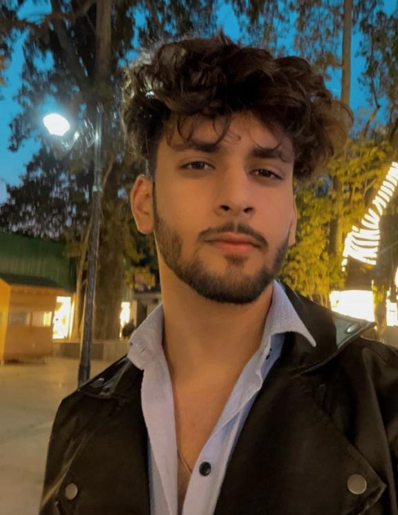

MOHAMMAD SHAAZAN MUZAFFAR |
 |
At 21, I'm a passionate web developer living in the beautiful region of Kashmir. Surrounded by the stunning Himalayas, my serene environment fuels my creativity and innovation in web development. From the tranquil Dal Lake to the vibrant Mughal gardens, my home provides the perfect backdrop for my digital endeavors. Specializing in crafting dynamic and responsive websites, I am dedicated to combining aesthetic design with functional excellence. As a young developer, I am constantly learning and adapting to the latest technologies, striving to make a mark in the ever-evolving world of web development while embracing the unique culture and charm of Kashmir.